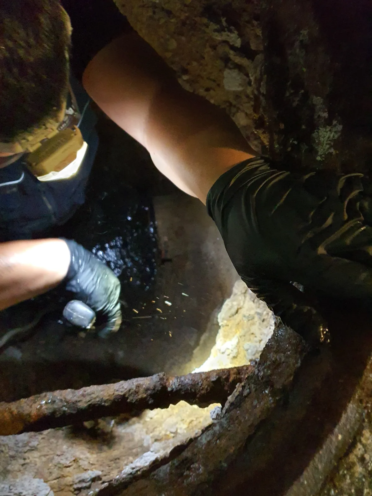
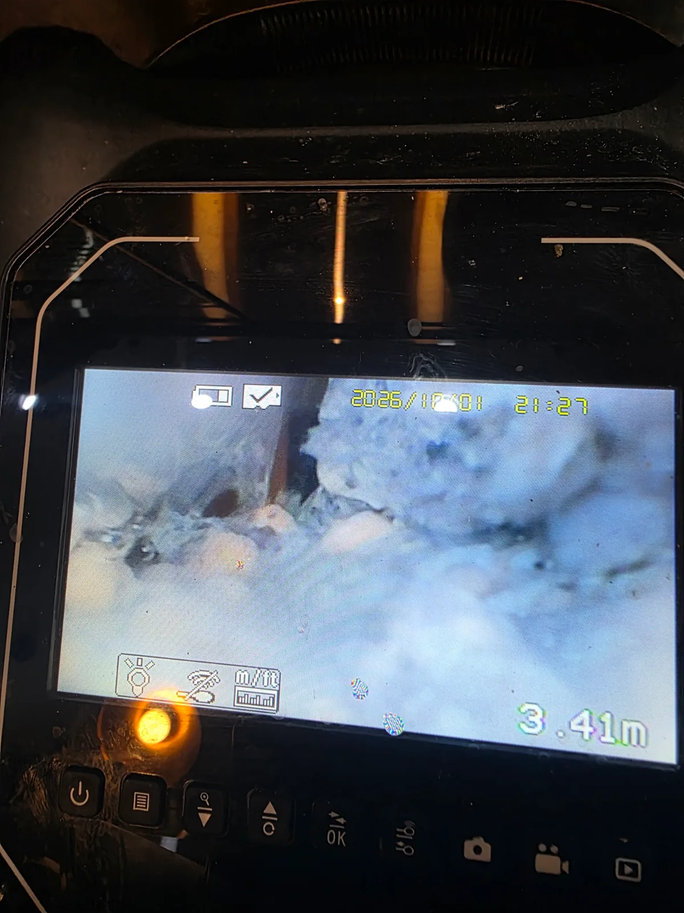
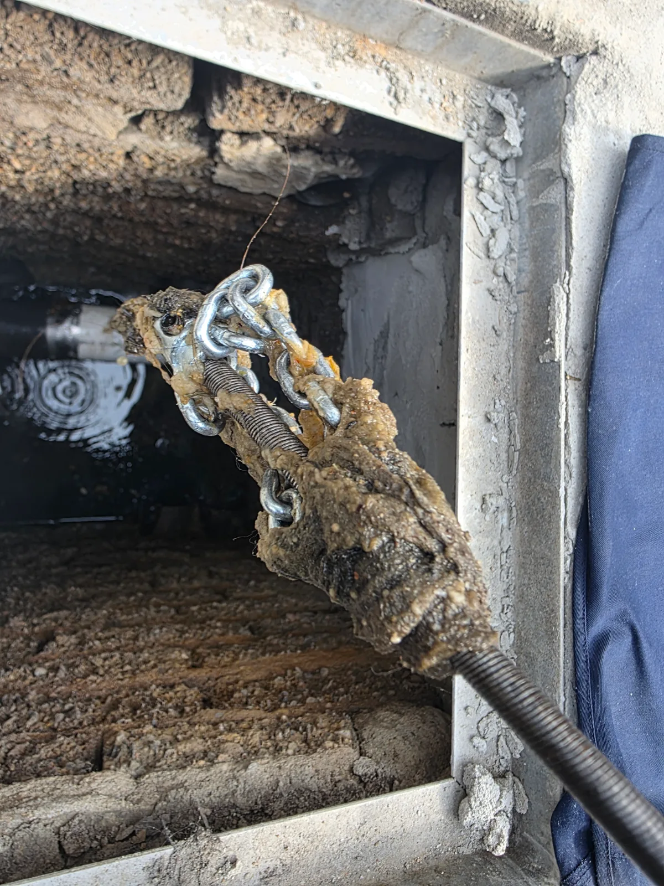

중랑구 면목동 하수구막힘 | 1층 여러 세대 역류 원인 찾아 2m 맨홀 내부 내시경
중랑구 면목동 하수구막힘 면목동에서 1층 여러 세대가 동시에 막히고 역류하는 증상을 확인해 공용 하수배관 문제를 의심했고 출수관을 추적한 뒤
서울특별시 FIELD NOTES
실제 출동 기록이 있는 지역을 중심으로 변기·싱크대·하수구·배관 작업 사례를 연결합니다.

중랑구 면목동 하수구막힘 면목동에서 1층 여러 세대가 동시에 막히고 역류하는 증상을 확인해 공용 하수배관 문제를 의심했고 출수관을 추적한 뒤

강서구 화곡동 변기막힘 서울 강서구 화곡동 변기막힘 현장에서 변기를 탈거한 뒤 하부 배출구에서 역방향 에어건 작업을 진행해 내부에 걸려 있던

강북구 수유동 싱크대막힘 현장에서 석션 작업을 반복했지만 막힘이 해소되지 않았고 내부에서도 원인이 뚜렷하게 보이지 않아 샤프트 작업으로 막힘

강남구 역삼동 변기막힘 현장에서 관통기를 먼저 사용했지만 막힘이 해소되지 않아 석션 작업으로 전환했고 변기 내부에 남아 있던 다량의 야채류

광진구 화양동 하수구막힘 커피숍 주방 배수배관을 내시경으로 확인한 결과 기름때와 각종 배출 찌꺼기가 엉긴 퇴적물이 확인되어 석션으로 1차 정리한

광진구 구의동 변기막힘 관통기와 석션으로 해결되지 않은 구의동 아파트 변기막힘 현장에서 변기를 탈거했습니다 아래쪽 배출구에서 역방향으로 에어건을

강동구 성내동 하수구막힘 약 6개월 전에도 오수관 작업을 진행했던 성내동 현장으로 배관 구배가 거의 확보되지 않은 상태에서 휴지와 이물질이 다시

강남구 대치동 변기막힘 빌딩 화장실에서 변기 내부에 단단히 뭉친 이물질로 발생한 막힘을 해결했습니다 관통 작업을 반복해 막힌 부분을 충분히

송파구 잠실동 변기막힘 현장에서 석션으로 휴지죽을 다량 회수했지만 막힘이 남아 변기를 탈거한 뒤 에어건 작업으로 해결했습니다

서초구 서초동 변기막힘 현장에서 변기를 탈거한 뒤 오수관에 막힌 음식물을 석션으로 회수하고 분리한 변기 내부는 에어건으로 작업했습니다

강남구 역삼동 변기막힘 석션과 관통기로 해결되지 않던 변기를 탈거해 하부 연결부에 걸린 닭다리와 닭날개를 발견했습니다 이물질을 직접 꺼내고

중구 순화동 싱크대막힘 아파트 싱크대 배관 안에 이물질이 두껍게 쌓여 물길이 좁아진 현장입니다 내시경으로 상태를 확인하고 샤프트로 배관스케일링을